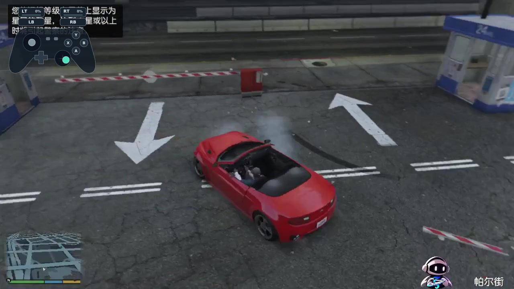
01:10成功甩掉警察
从两星追捕到解除通缉，任务提示切换为将车开回车店。
Zeroth Embodied Task Agent
由 MOSS-ZETA-preview 驱动，从屏幕画面出发，结合实时控制、按需思考与持续记忆，在 GTA V 中推进长程任务。
从追捕与交火，到隧道穿行和跃海潜游。

01:10从两星追捕到解除通缉，任务提示切换为将车开回车店。
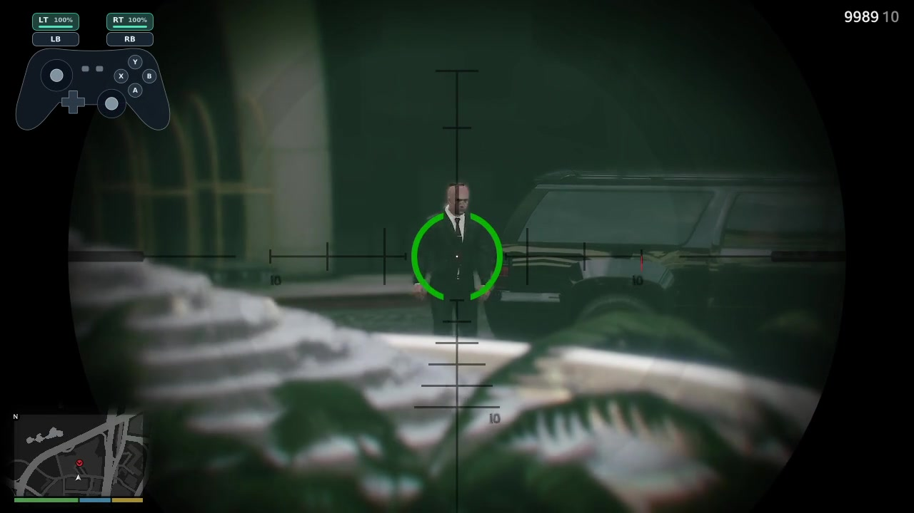
00:10通过瞄准镜跟踪远处移动目标，调整准星并射击。
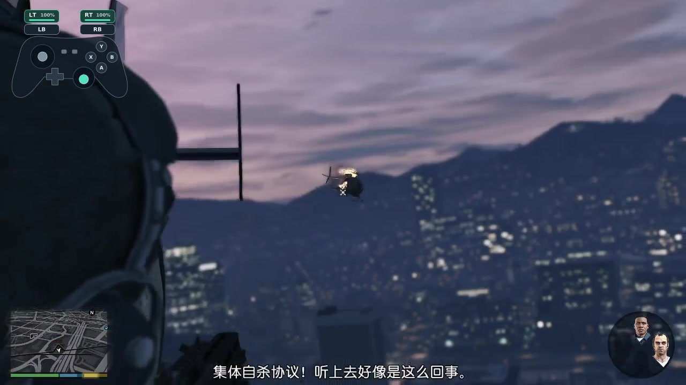
00:31从直升机侧舱瞄准追来的敌机，连续跟踪射击直至机身起火。
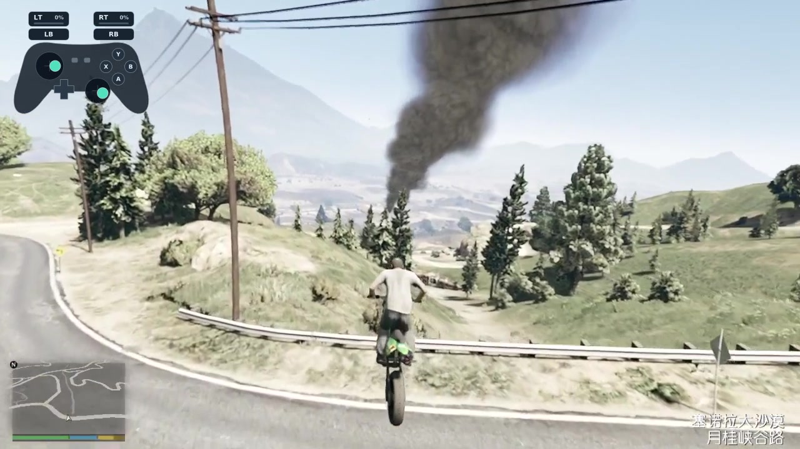
00:37沿山地追踪冒烟的飞机，冲下陡坡、跃过公路护栏后继续前进。
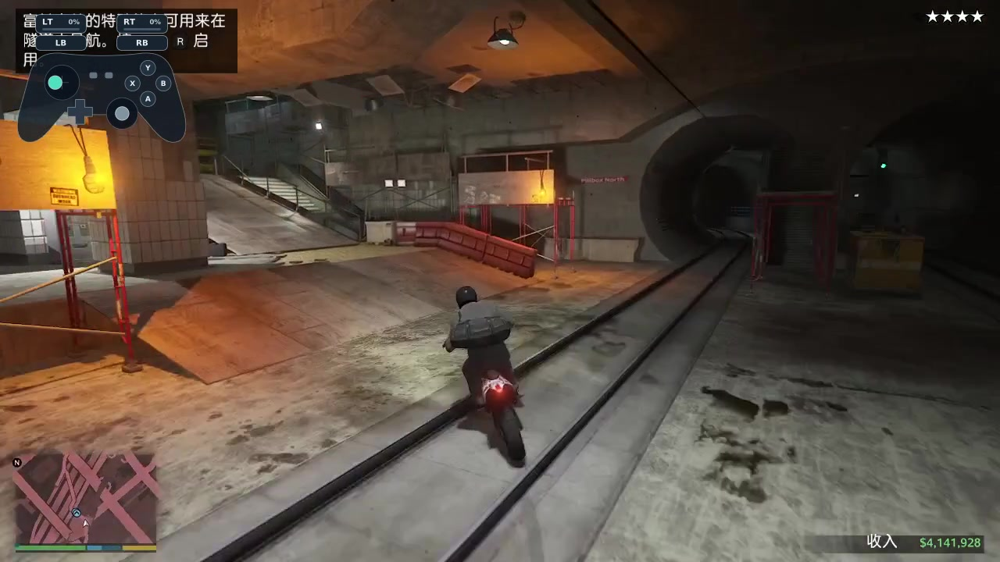
00:36骑摩托车穿过弯曲管道、工地与地铁站，在通缉中连续转向。
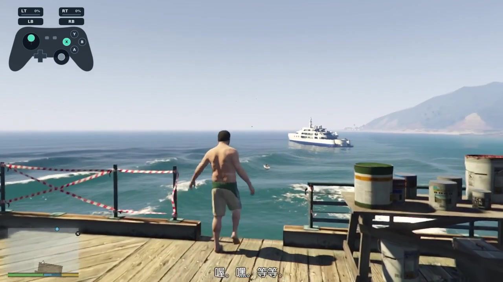
00:30从码头跃入海中，下潜游动后重新浮出水面。
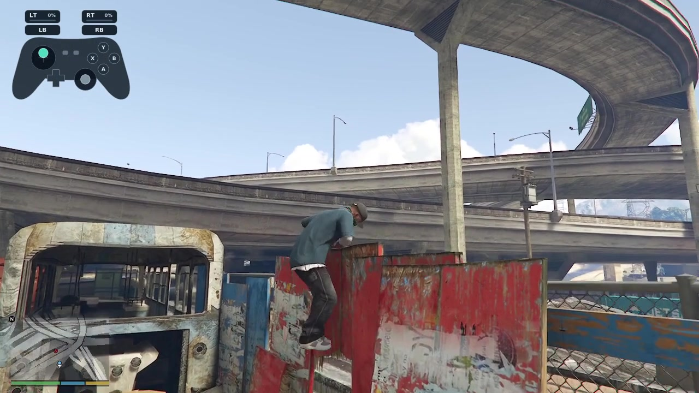
00:10追随目标冲入院落，翻过围栏后沿屋顶继续追赶。
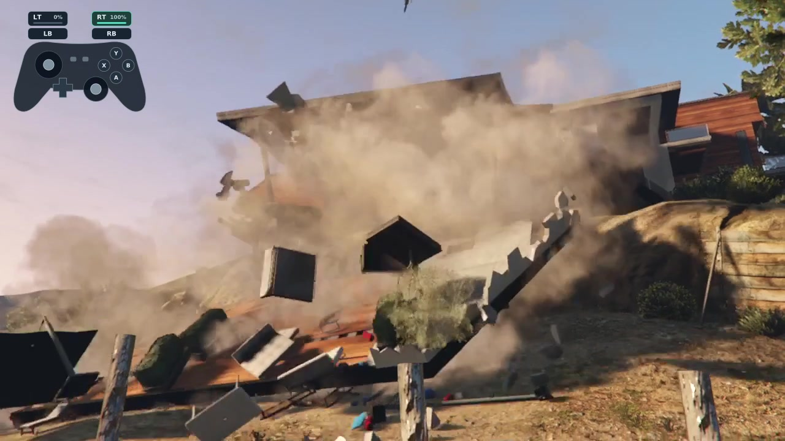
00:13驾驶皮卡牵引山坡建筑，随后可见建筑结构坍塌。
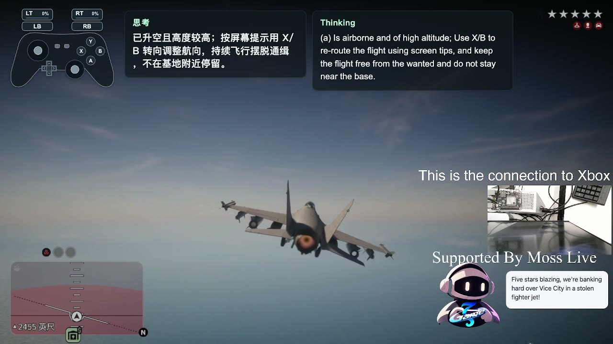
00:05左摇杆两次偏转，飞机从平飞转入侧倾。
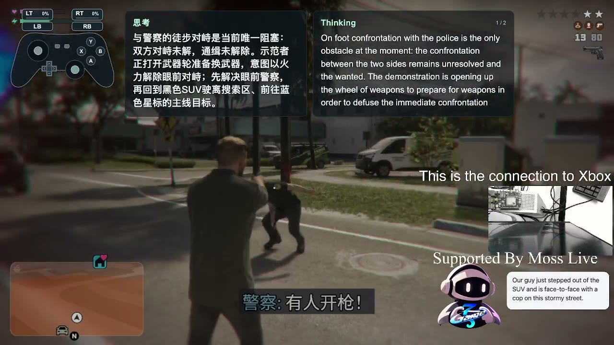
00:05角色在路口转身瞄准，与迎面的警员交火。
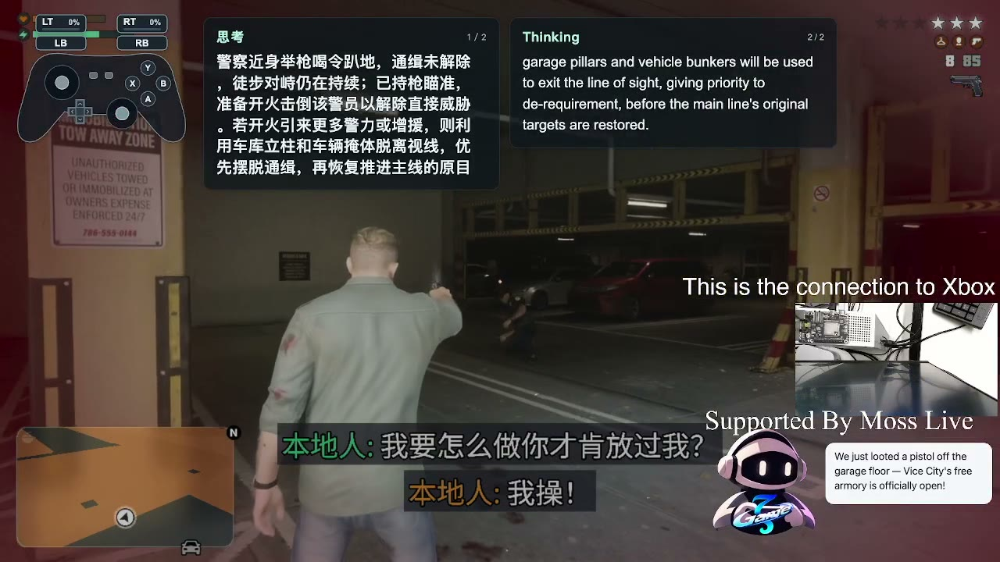
00:05角色在停车场转身，朝车道方向开火后移动。
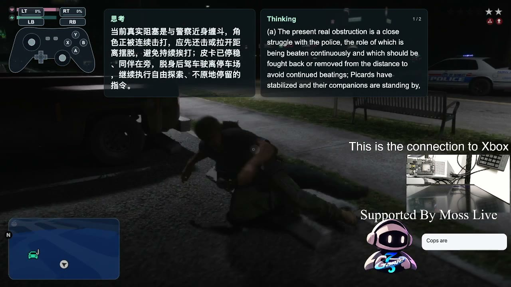
00:05角色按 B 键挣脱并推开警员。
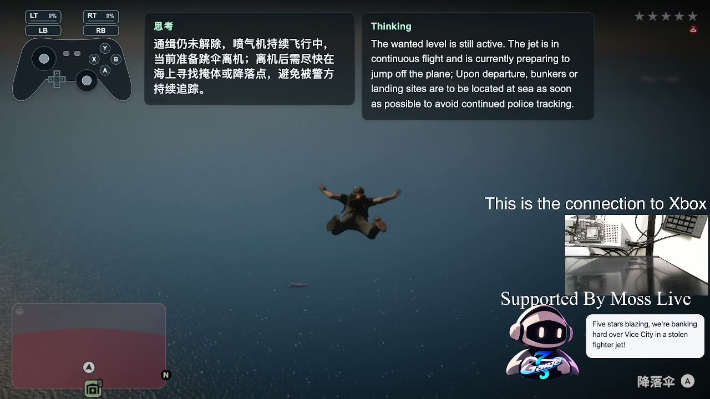
00:05角色跃出机舱，在海面上空进入自由落体。
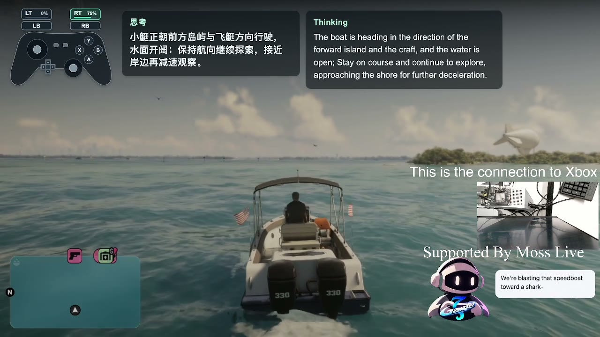
00:05快艇驶过开阔水面，船尾拖出两道白浪。
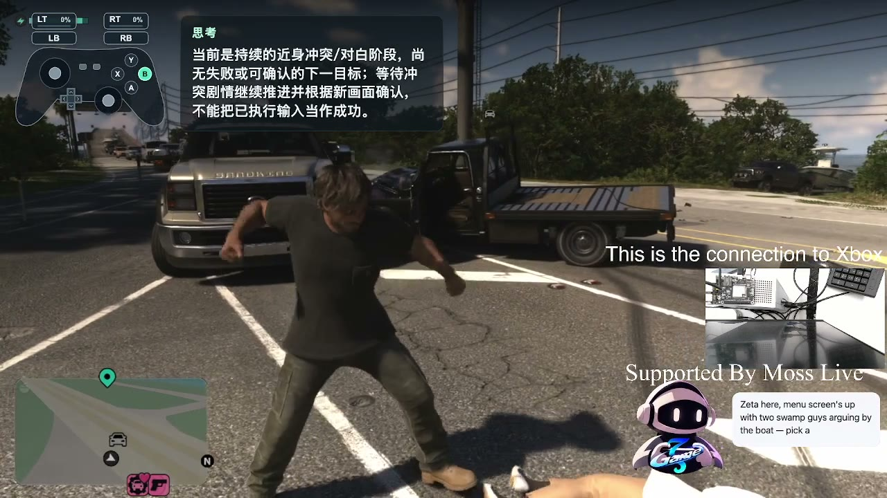
00:05角色在街边车辆之间近身出拳，将对手击倒。
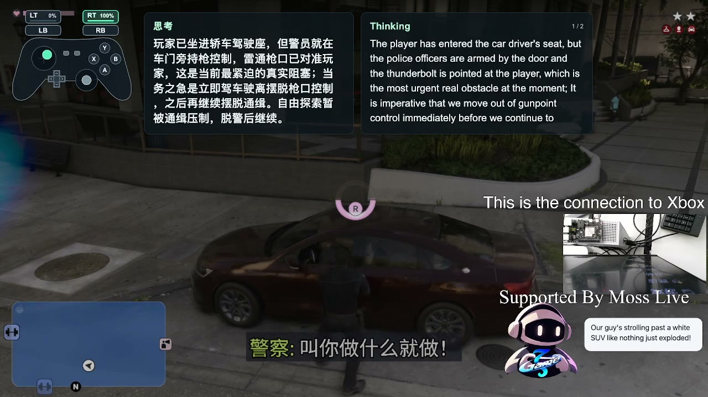
00:05角色留在驾驶位并驶离。
驾驶需要随时修正方向，目的地却可能在数分钟前就已确定。ZETA 将这两种时间尺度连接起来：System 1 的视觉 Policy 负责快速手柄控制，System 2 的外部 Brain 负责阶段规划与任务记忆。
Policy 从 Qwen3.5-9B 初始化，通过动作预训练学习控制，再通过指令微调学习何时沿用计划、调整判断或调用 Brain。双路推理减少上下文切换的等待，200ms 调度器把生成的动作落到实际控制窗口，Harness 则在交互过程中维护任务状态。
从模型与数据，到持续交互所需的推理和执行系统。
Policy 从当前画面、近期观察与动作历史中预测短时手柄控制，同时决定沿用判断、更新局部计划，还是请求 Brain 重新审视阶段目标。视觉控制和更新决策由同一个自回归模型生成。
阶段指令回答“当前要完成什么”，局部思考回答“此刻如何推进”，任务记忆保留已确认的进度、事实和约束。三者在不同时间尺度上更新，让短时控制始终连接到持续的任务上下文。
 点击查看大图
点击查看大图
Policy根据当前画面、近期历史与任务上下文生成控制，并按需请求局部更新或Brain重规划。下方展示两阶段监督训练。
每个动作包含左右摇杆与两个有序的 100ms 按键状态。
动作预训练使用约 4,000 小时人类 GTA V 手柄游戏记录，其中自由游玩与任务驱动各约 2,000 小时。指令微调从同一语料的任务部分选取约 1,200 小时并补充标注；这些时长统计的是增强前的原始录像。
视频帧和真实手柄事件先对齐到同一时间轴，再结合阶段指令、局部思考和任务记忆构造样本。Policy 的当前输入包含完整画面、同帧小地图、可用 OCR、近期历史，以及当时有效的任务状态。
 点击查看大图
点击查看大图
画面、真实手柄动作和任务标注共享时间轴；阶段指令、局部思考、任务记忆、历史与当前观察共同构成输入。
样本将任务状态与当前观察对齐，小地图取自同一帧。
Policy 从 Qwen3.5-9B 初始化，第一阶段在视觉—动作序列上学习手柄控制。第二阶段继续微调同一 Policy，使动作依赖任务目标、局部判断与已记录的进度，同时学习何时继续、何时更新思考、何时请求 Brain。Brain 与 OCR 为 Policy 提供规划和视觉文本上下文。
动作预训练使用20轮窗口；指令微调使用最多 16 轮的窗口，推进时保留最近 8 轮。只有选中的当前 assistant 响应参与目标监督；任务记忆、输入状态与保留的历史作为上下文。空 think 的关闭标签也有监督，因此“继续执行”是一个明确的模型决策。
对连续重复的真实整条动作，训练采用 γ=0.5 的重复动作损失衰减；思考和 Brain 字段保持单位权重。配合时序相位增强与中性历史后的专家继续样本，训练关注动作变化以及恢复有效控制。
 点击查看大图
点击查看大图
动作预训练采用20轮窗口；指令微调采用16轮、保留8轮。图中展示目标响应在下一窗口转为历史，以及三种响应的监督边界。
橙色下划线表示参与监督的目标；保留历史和起始think标签作为输入，空think的关闭标签也参与监督。
非空局部 think 由 Policy 提出新判断，Brain 刷新记忆并保留阶段指令；周期刷新则可同时更新记忆与局部思考。在交接配置下，活动服务继续控制，待命服务为新上下文建立独立会话。
新上下文在待命服务产出完整合法动作、且后续前缀就绪后一起生效。完整 Brain 调用会先停止新提交、处理未完成动作、释放输入并确认游戏暂停，再审视阶段指令、记忆和局部判断，提交后从新观察恢复。
 点击查看大图
点击查看大图
局部think请求Brain更新记忆；周期刷新生成记忆与思考；完整Brain调用重新审视全部字段。背景前缀准备可服务这三种请求。
局部更新在配置的交接点激活；完整Brain调用先确认游戏暂停，再提交新状态并恢复。
以下示例展示继续执行、局部更新和 Brain 调用三种响应。
一条 TP4 路生成当前响应时，另一条准备下一轮已知前缀。准备不包含尚未完成的响应或未来观察；真正复用时检查 token 与有序图像是否一致，窗口裁剪则精确重建选中的 16/8 历史。默认两路可放在一台八卡 H200 节点上。
在论文的延迟感知设定中，时刻 t 的观察对应 (t+200ms, t+400ms] 的动作。提前到达的状态等待起点，迟到动作保留原窗口终点，过期状态丢弃。200ms 是观察与动作的目标节拍；窗口准备、模型生成和执行各有自己的依赖。
 点击查看大图
点击查看大图
裁剪16轮历史并保留最近8轮，先准备已知前缀，待完整响应和新观察到齐后继续生成。两条TP4路与200ms动作窗口并行运行。
实线表示前缀复用，虚线表示完成响应的依赖，橙色标记表示提前就绪的控制状态等待指定起点。
服务侧结合编译执行、CUDA Graph、共享图像特征、精简的多模态 token 处理与异步调度。下图分别展示独立移除组件的对照，以及相同 Graph512 条件下的张量并行规模比较。
在相同 Graph512 条件下，TP1、TP2、TP4、TP8 的平均请求延迟分别为 244.7、196.6、179.4、178.7 ms。TP4 扩展至 Graph8192 后为 168.9 ms。
 点击查看大图
点击查看大图
Qwen3.5-9B、BF16、H200，15轮完整历史加当前观察，固定生成20个token。左图独立移除优化组件；右图在相同Graph512条件下比较TP规模。
所有配置使用相同16个场景，每场景在两个节点上各重复5次（每节点80次，共160次请求），均采用32768个视觉嵌入的缓存和16384-token批处理预算。左图TP4、Graph8192；右图Graph512。计时不含图片上传与先前的前缀准备。固定20个输出token用于比较服务开销；实际部署在完整动作生成后停止。
Harness、推理 Infra 和 200ms 节拍器在同一仓库中配套维护。